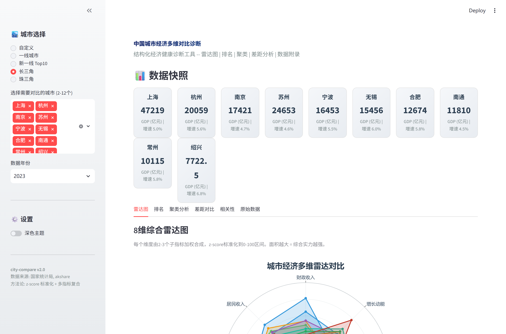

city-compare
Python中国城市经济竞争力对标系统 — 50城市/8维度/雷达图/K-means聚类, Streamlit交互
🌱 新建仓库
🔧 开放复刻
📅 更新 2026-07-18
⚖ License MIT
🐙 GitHub 仓库
📊 Streamlit 应用（本地部署截图）
应用截图


README
Not another city ranking site -- this is a structured multi-dimensional economic health diagnostic tool.
对城市经济进行 8 个维度的系统性诊断：经济规模、增长动能、财政收入、居民收入、消费活力、工业实力、对外开放、公共服务。雷达图 + 聚类 + 差距分析 + 排名，一键生成自包含 HTML 诊断报告。
# 1. 克隆项目
git clone <repo-url> city-compare
cd city-compare
# 2. 安装依赖
pip install -r requirements.txt
# 3. 启动 Web 应用
streamlit run app.py
# 4. (可选) 运行命令行 Demo
python examples/demo.py打开浏览器访问 http://localhost:8501 即可使用。
| 功能 | 说明 |
|---|---|
| 8维雷达图 | z-score 标准化到 0-100，每个维度由 2-3 个子指标加权合成 |
| 交互式排名 | 横向条形图 + 样式化 HTML 排名表，悬停查看详情 |
| K-means 聚类 | PCA 降维 + 聚类分组，发现经济结构相似的城市 |
| 差距分析 | 双城市逐维对比，一目了然谁在哪个维度领先 |
| 相关性热力图 | 12 项经济指标的 Pearson 相关系数矩阵 |
| 自包含报告 | 单文件 HTML，含封面、雷达图、排名表、聚类图、热力图、数据附录 |
| Streamlit Web | 侧边栏多选城市，Tab 页切换，一键下载报告 |
| 50城预载 | config/cities.yaml 包含中国前 50 城市 2023 年基准数据 |
city-compare/
├── README.md
├── requirements.txt
├── app.py # Streamlit Web 前端
├── city_compare/
│ ├── __init__.py # 包入口，公开 API
│ ├── fetcher.py # 数据获取 (akshare + YAML 回退)
│ ├── radar.py # 可视化核心 (Plotly)
│ └── report.py # HTML 报告生成器
├── config/
│ └── cities.yaml # 50 城市预载数据
└── examples/
└── demo.py # 命令行演示脚本
每个维度由 2-3 个底层指标加权合成，所有指标均经过 z-score 标准化并平滑映射到 0-100 区间。
| 维度 | 子指标 (权重) | 数据来源 |
|---|---|---|
| 经济规模 | GDP总量 (0.6) + 人均GDP (0.4) | 国家统计局 |
| 增长动能 | GDP增速 (1.0) | 国家统计局 |
| 财政收入 | 预算收入/GDP (0.5) + 人均预算 (0.5) | 财政部 |
| 居民收入 | 城镇居民人均可支配收入 (1.0) | 国家统计局 |
| 消费活力 | 社消/GDP (0.5) + 人均社消 (0.5) | 国家统计局 |
| 工业实力 | 工业增加值/GDP (0.7) + 人均工业 (0.3) | 工信部 |
| 对外开放 | 外资/GDP (0.6) + 人均外资 (0.4) | 商务部 |
| 公共服务 | R&D占比 (0.4) + 千人床位 (0.3) + 百万人口高校 (0.3) | 多源合成 |
from city_compare import compare_cities, compute_composite_scores, generate_report
# 获取多城市对比数据
result = compare_cities(["上海", "北京", "深圳", "广州"])
# result["overview"] -- 综合概览 DataFrame
# result["per_capita"] -- 人均指标 DataFrame
# result["raw"] -- 完整原始数据 DataFrame
# 计算8维综合得分
scores = compute_composite_scores(["上海", "北京", "深圳", "广州"])
# 生成 HTML 诊断报告
generate_report(["上海", "北京", "深圳"], output_path="report.html")- 实时数据: 通过 akshare 从公开 API 获取最新城市经济数据
- 回退数据: 当 akshare 获取失败时，自动回退到
config/cities.yaml中的预载静态数据 - 数据年份: 默认使用 2023 年数据，cities.yaml 中包含 50 个城市的完整指标
- 数据更新: 编辑
config/cities.yaml即可更新基准数据
- Python >= 3.9
- streamlit -- Web 前端
- akshare -- 经济数据获取
- plotly -- 交互式可视化
- pandas, numpy, scipy -- 数据处理
- scikit-learn -- K-means 聚类 + PCA
- pyyaml -- 配置文件解析
| 雷达图 | 排名 |
|---|---|
| 8维雷达对比，面积越大综合实力越强 | 横向排名条形图，悬停交互 |
| 聚类 | 报告 |
|---|---|
| K-means + PCA，经济结构相似性分组 | 自包含 HTML，打印友好 |
MIT